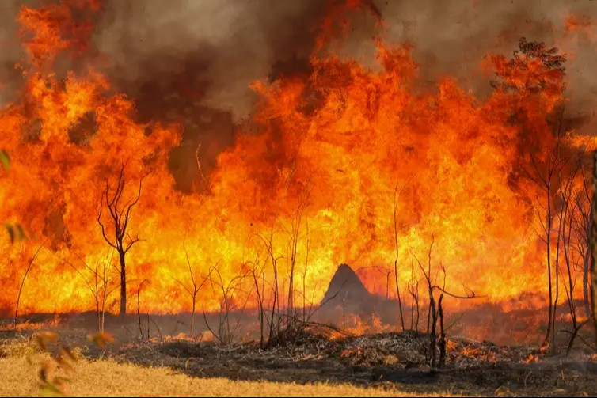
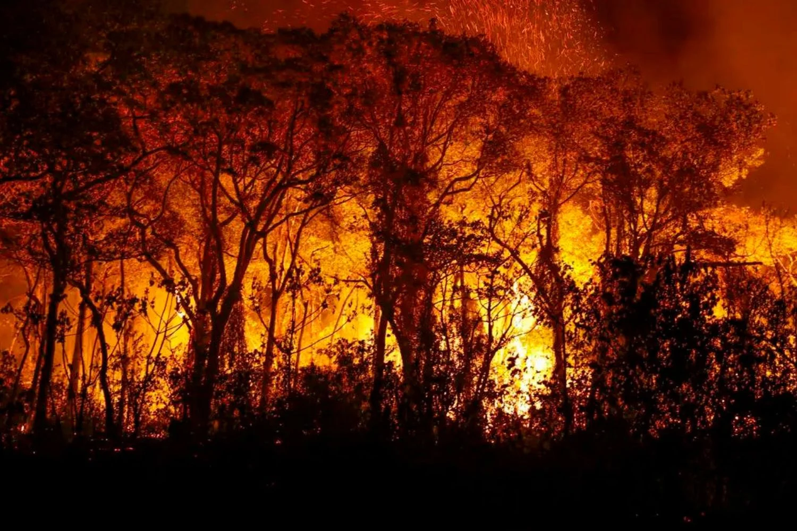
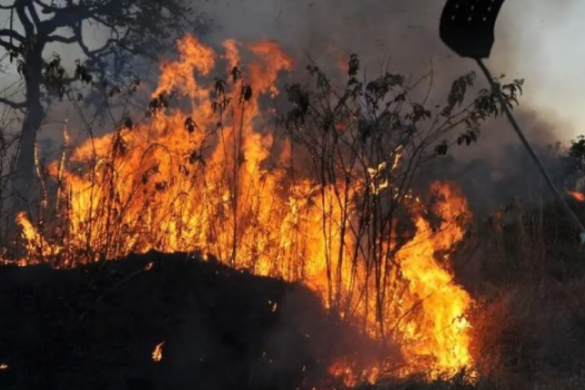
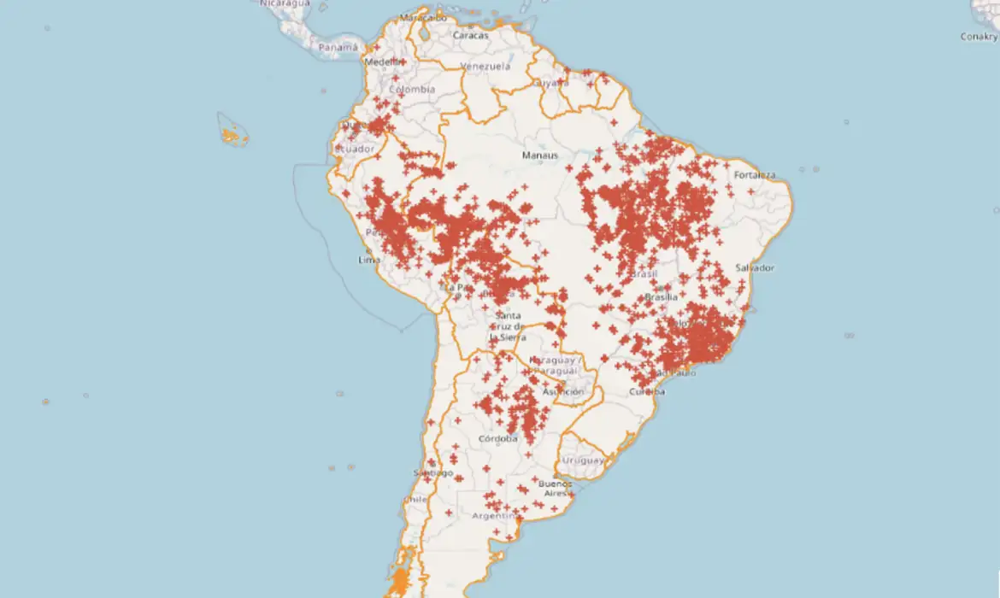
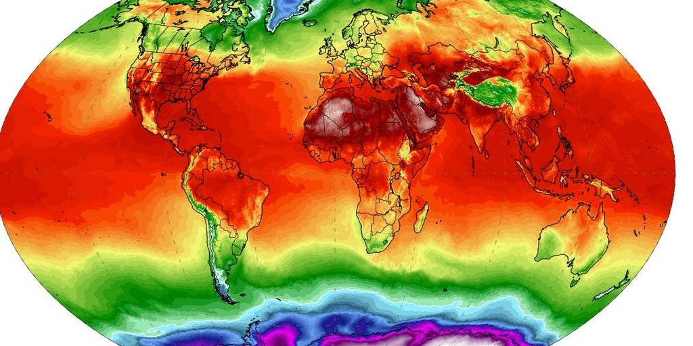

O que são?
As queimadas são uma prática que consiste em incendiar terrenos, geralmente para limpeza do solo para plantação ou pecuária. Mas que geram desmatamentos e podem queimar áreas verdes, biomas e até florestas inteiras, implicando na perda de biodiversidade e aumento de emissão dos gases de efeito estufa.
As queimadas são problemas ambientais que ocorrem durante o ano todo,
tendo na estiagem que segue até o mês de outubro, a época com maior incidência,
destruindo vegetações e matando animais. Pode também, destruir áreas produtivas
como lavouras e pastagens, provocando grandes prejuízos.
'O principal problema das queimadas é que elas podem acabar com a biodiversidade, matando
plantas, animais e os microorganismos fundamentais para o equilíbrio ecológico',
  

Principais Motivos...
Na maioria das vezes, essas queimadas são provocadas pela ação humana de maneira criminosa. Os incêndios são muitas vezes iniciados por agricultores em áreas de pastagens, para renovação de pastos, e por grupos que causam desmatamento para eliminar vegetação rasteira e retirada de madeira para comercialização.
Especialistas apontam que outro principal fator para o aumento no número de queimadas é a seca, que afeta mais de 58% do território nacional, segundo dados do Cemaden (Centro Nacional de Monitoramento e Alerta de Desastres Naturais).

Você Sabia...?
Muitas pessoas acreditam que as chamas são a maior ameaça em um incêndio. No entanto, a fumaça tóxica é responsável pela maioria das mortes em situações de incêndio.
Ebulição global?
Já falamos bastante sobre queimadas e seus danos, mas iremos falar de um dos piores efeitos colaterais das queimadas.
O aquecimento global | O efeito estufa
O aquecimento global é um fenômeno caracterizado pelo aumento das temperaturas médias da Terra, sendo esta em torno de 15º C. Isso ocorre porque gases como o dióxido de carbono e metano que junto ao vapor d’água, formam uma camada que aprisiona parte do calor do Sol em nossa atmosfera. Se não fossem esses gases, a Terra seria um ambiente gelado, com temperatura média de -17º C. Esse fenômeno natural é chamado de efeito estufa e se não fosse por ele, a vida na Terra não teria tamanha diversidade.

Dês da revolução industrial, a necessidade por carbono havia aumentado de forma imensa. 'As florestas, grandes depósitos de carbono, começaram a ser destruídas e queimadas cada vez mais rápido. Com isso, imensas quantidades de dióxido de carbono, metano e outros gases passaram a ser despejados na atmosfera, tornando a camada que retém o calor mais espessa, o que intensifica o efeito estufa.'
Somente no último século, a temperatura da Terra aumentou em 0,7º C. Parece pouco, mas esse aquecimento altera as condições climáticas em todo o planeta. As grandes massas de gelo começam a derreter, aumentando o nível médio do mar, ameaçando as ilhas oceânicas e as zonas costeiras. Furacões, tufões e ciclones ficam mais intensos e destrutivos. Temperaturas mínimas ficam mais altas, enxurradas e secas mais fortes, além das regiões com escassez de água, como o semi-árido, virando desertos.
Resoluções
O Compromisso com o Planeta: Um Dever de Todos
A proteção ambiental é muito mais do que uma simples ideia. É uma responsabilidade que recai sobre todos nós, homens e mulheres, jovens e idosos, independente de onde vivemos. Nossa responsabilidade ambiental não se limita ao presente, pois suas repercussões se estendem para as futuras gerações. Entender a importância da preservação do meio ambiente é o primeiro passo para um mundo mais saudável.
Mas o que podemos fazer para evitar queimadas?
Segundo o Gov.br:
Não jogue lixo e nem deposite entulhos às margens da rodovia;
Não jogue bituca de cigarro pela janela do veículo;
Evite utilizar fogo para limpeza de terrenos e queima de lixo;
E se avistar um foco de incêndio, avise os bombeiros através do número 193.
Boa parte dos focos poderiam ser evitadas com atitudes conscientes.
Mas e você?
O que você acha que pode ser feito para parar as queimas? Escreva abaixo e nos ajude a tornar o mundo um lugar menos quente...